“Big Lick Blues”
Featuring Her Majesty
Pull up a chair for the newest serving of conversation, live music, and Southwest Virginia creativity.
Open on YouTubeA high-energy variety show where live performances, honest conversations, and Southwest Virginia's creative scene all meet at the same table.
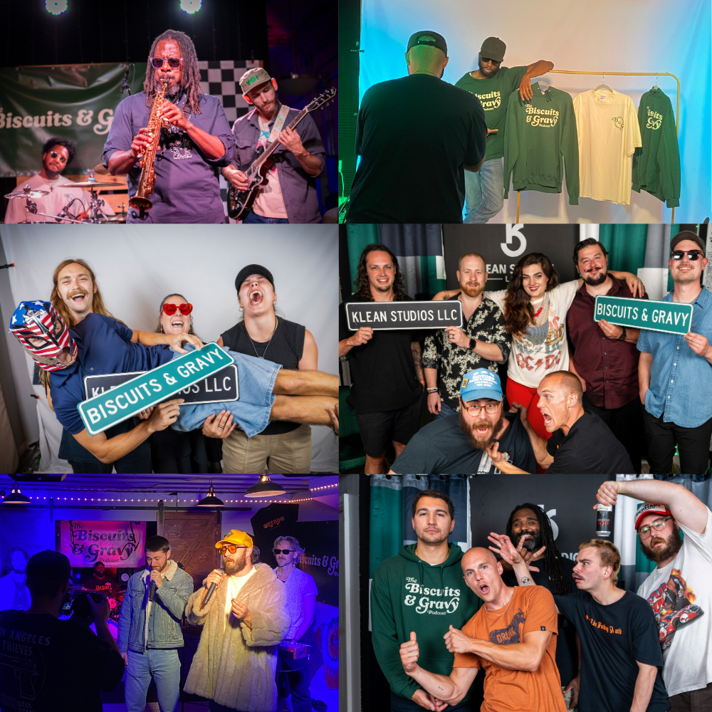
Let'sFeaturing Her Majesty
Pull up a chair for the newest serving of conversation, live music, and Southwest Virginia creativity.
Open on YouTube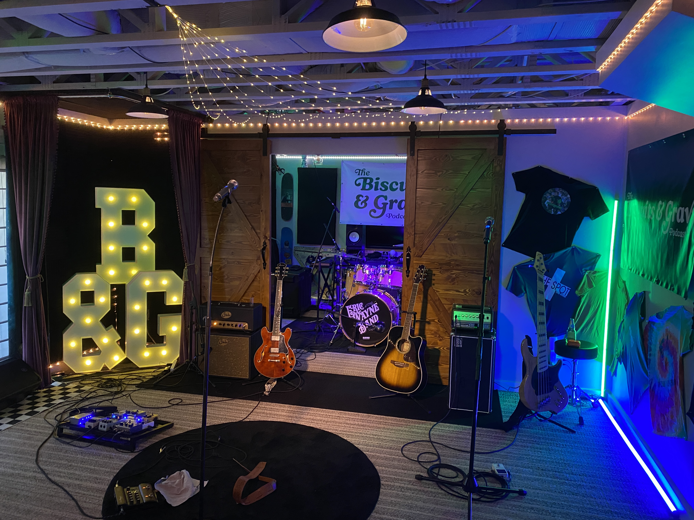
A Klean Studios productionBiscuits and Gravy is a weekly variety show centered around music, featuring a special guest and a live performance in every episode.
B&G lives in the middle ground between a podcast and a late-night talk show—mixing in-depth conversation with live performances, comedy, and the people making cool things happen across the Southwestern Virginia region.
 - At The Spot On Kirk (1).JPEG)
%20(1).jpg)
More than 130 people packed downtown Roanoke for episode 50—a five-act live musical event with crowd segments, giveaways, and the kind of energy you cannot fake.
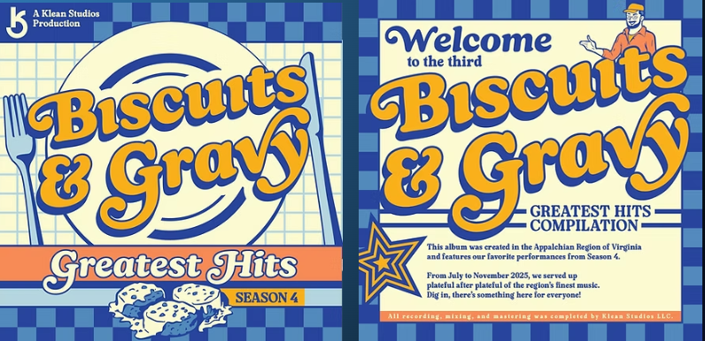
A compilation born in Virginia's Appalachian region, collecting standout performances from the season in one extra-helping-sized release.
The hosts, cameras, producers, and creative hands keeping B&G moving.
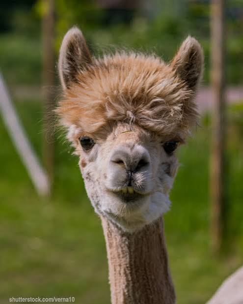
01Founder & Host
Executive Producer & Host
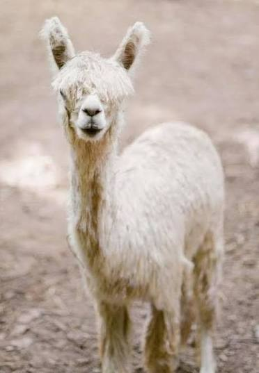
03Co-Host & Production Assistant
1st Cameraman
Creative Director
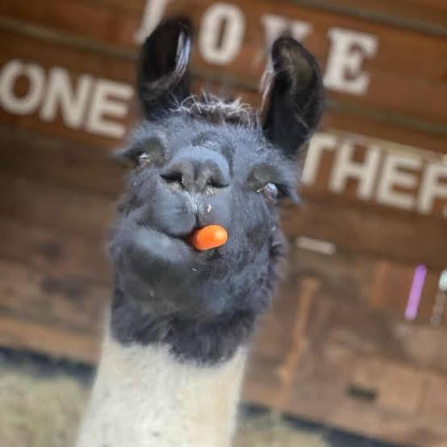
06Video Editor & Production Assistant
Community, mentorship, and a home studio help keep Biscuits & Gravy moving.
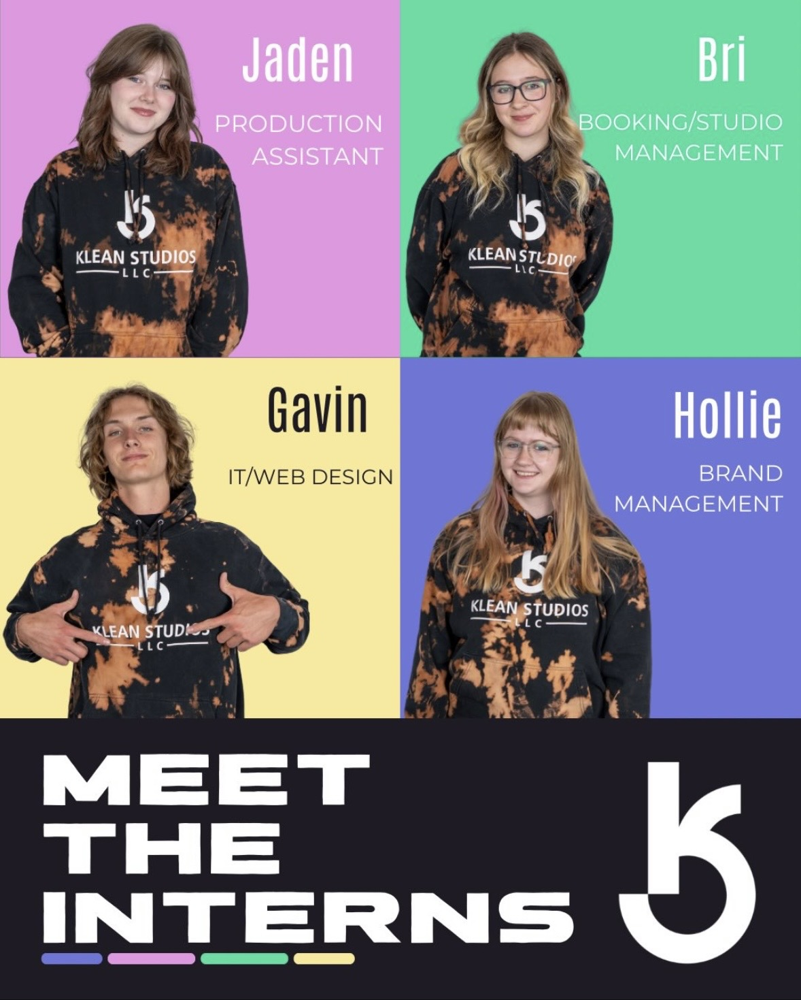
Klean Studios' customizable internship program connects emerging professionals with hands-on industry experience, mentorship, networking, and career-building opportunities through projects including The Biscuits & Gravy Show.
Read the full program detailsBiscuits & Gravy is supported by Klean Studios LLC, utilizing its recording studio and other wonderful amenities. Biscuits & Gravy would not be possible without the help of Maxwell Klimczak and his team at Klean Studios.
The people bringing fresh energy and hands-on creativity to the show and studio.
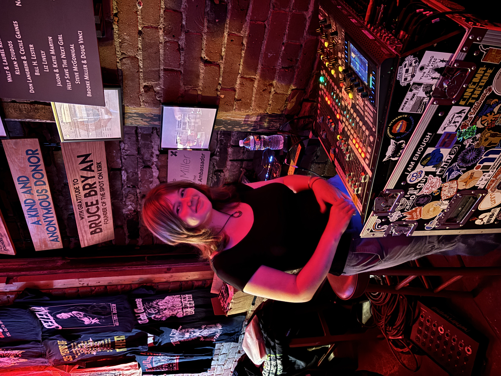
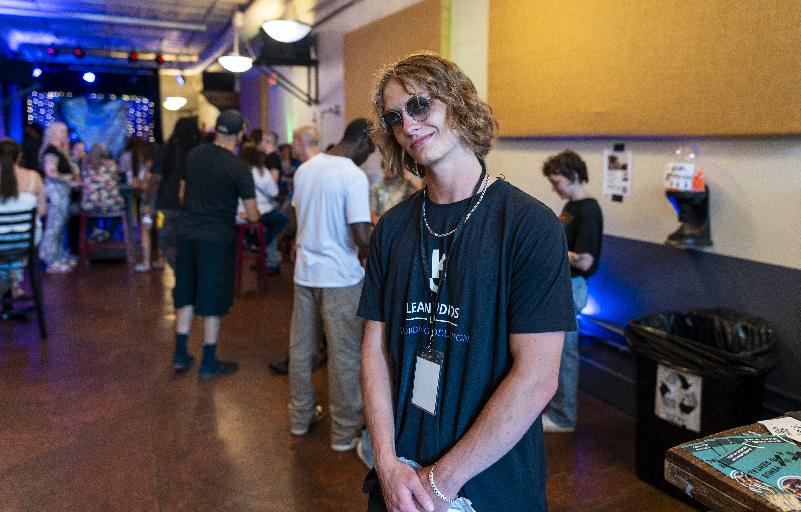
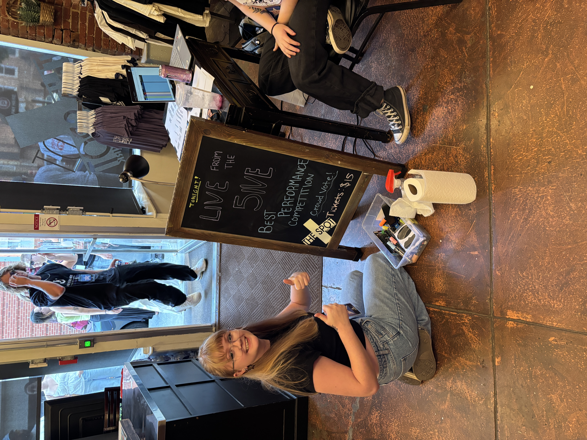

A big thank-you to the Roanoke-area businesses who help keep the show cooking.
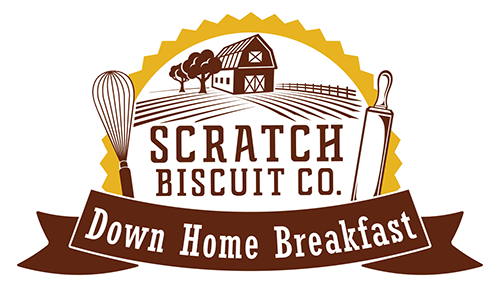
Down-home, made-from-scratch biscuits and breakfast served fresh in Roanoke's Grandin Village.
Visit Scratch
An intimate downtown music venue bringing local and touring artists together with the community.
Visit The Spot
Muay Thai coaching and strength training built around skill, steady progress, and real support.
Visit Coastal
A downtown Roanoke craft brewery, taproom, and beer garden with a love for quality and variety.
Visit Big Lick
Handcrafted Roanoke meads made with honey and natural ingredients, marrying tradition with bold flavors.
Visit Atheling
A Roanoke-born nano-brewery pouring its own small-batch beers in Roanoke and Buchanan.
Visit AFOGBring your story to the table—or help keep the next serving coming.
Have a story, project, performance, or idea worth sharing? Tell the crew a little about yourself and why you belong at the table.
Put your organization alongside the conversations, performances, and people shaping the region's creative community.